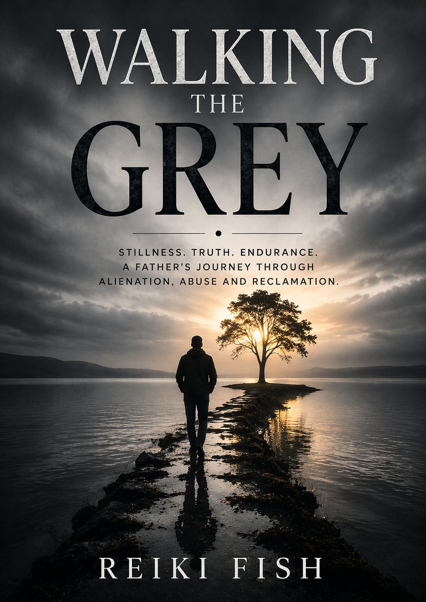

Psychology-informed coaching
Coaching grounded in practical behavioural insight, reflection and emotional steadiness.
ABOUT ANDY FISH
Andy Fish is an author, psychology-informed coach and mental-health educator whose work grew from lived experience of adversity, grief, family separation and the emotional consequences of prolonged conflict.
His journey through fatherhood, parental alienation and the psychological patterns associated with DARVO led him to explore a central question: how do we remain grounded when everything around us encourages fear, reaction and emotional overwhelm?
His work sits at the meeting point of lived adversity, psychological insight and the disciplined search for steadiness when life becomes emotionally overwhelming.
The work begins in the space where grief, fatherhood, separation and recovery refuse to remain abstract.
MY STORY
Andy’s work did not begin as a theory. It began through the reality of trying to remain a loving father while navigating separation, grief, false narratives and the emotional strain of family conflict.
These experiences revealed how unresolved trauma can affect communication, identity, relationships and the nervous system. They also demonstrated the importance of learning to pause, regulate and respond thoughtfully rather than being pulled into cycles of reaction.
Instead of allowing adversity to define the rest of his life, Andy began studying mental health, psychology, trauma-informed practice, emotional regulation and psychology-informed coaching. This learning became the foundation for his writing, educational work and the philosophy known as Walking the Grey.
WALKING THE GREY
“The Grey is not uncertainty. It is the place where reaction becomes reflection, fear becomes understanding and strength no longer needs to announce itself.”
Walking the Grey is a philosophy of emotional regulation, discernment and resilience. It recognises that human experiences are rarely entirely light or entirely dark.
The Grey is the calm centre between extremes: a place where people can acknowledge pain without becoming consumed by it, recognise manipulation without losing compassion, and establish boundaries without surrendering their integrity.

QUALIFICATIONS
Andy’s approach combines lived experience with continued education in mental health, psychology, trauma awareness, emotional regulation and psychology-informed coaching.
Coaching grounded in practical behavioural insight, reflection and emotional steadiness.
Structured study supporting psychologically aware conversations and educational work.
An approach shaped by the effects of stress, grief, survival responses and recovery.
Applied learning focused on nervous-system awareness, response patterns and steadiness.
Continued independent research into growth, resilience, identity and meaningful change.
Creator of Walking the Grey and its wider philosophy of reflection, discernment and resilience.
Public psychology and wellbeing discussions shaped by lived understanding and calm delivery.
Reflective audio conversations extending the themes of regulation, trauma and human behaviour.
Andy is not presenting himself as a psychologist, psychiatrist or psychotherapist. His work is educational and coaching-based and is not a replacement for medical, psychological or emergency care.
WHO I HELP
You do not need to pretend the past did not happen. The work begins by learning how the past affects the present and developing healthier ways to move forward.
Support for people living with separation, loss of contact and the grief of disrupted parent-child relationships.
Space to understand how trauma shapes identity, relationships, reactions and the body.
Grounded reflection for those living with sorrow, absence, emotional exhaustion or major life change.
Practical guidance for those who want to respond more thoughtfully without suppressing feeling.
Clarity for people trying to make sense of blame shifting, coercion and psychological confusion.
Support for people navigating ongoing tension, fear, reactivity and the search for steadier boundaries.
VALUES
Seeking understanding before assumption and remaining committed to honesty.
Meeting people with empathy while maintaining healthy boundaries.
Remaining consistent in values even during adversity.
Responding thoughtfully instead of reacting emotionally.
Growing through life's challenges without losing yourself.
Using experience and education to help others move forward.
NEXT STEPS
Explore the philosophy behind Walking the Grey or learn how psychology-informed coaching may support your next steps.